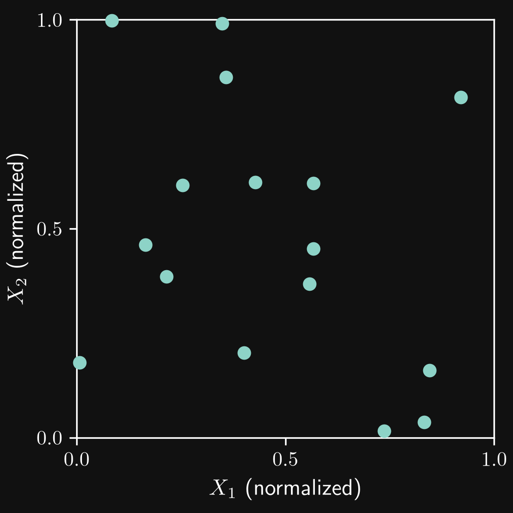
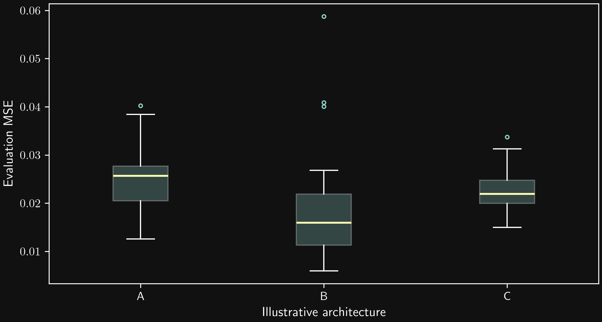
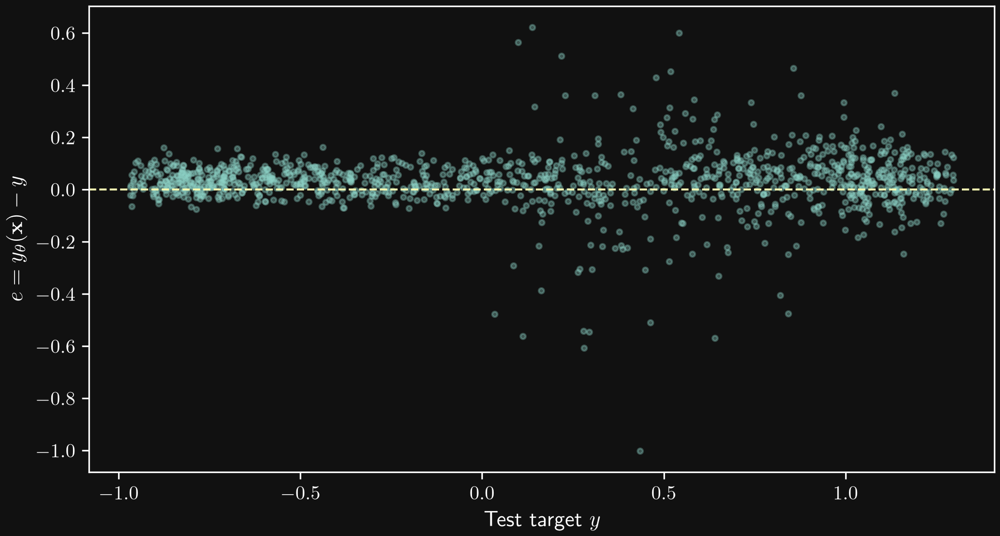
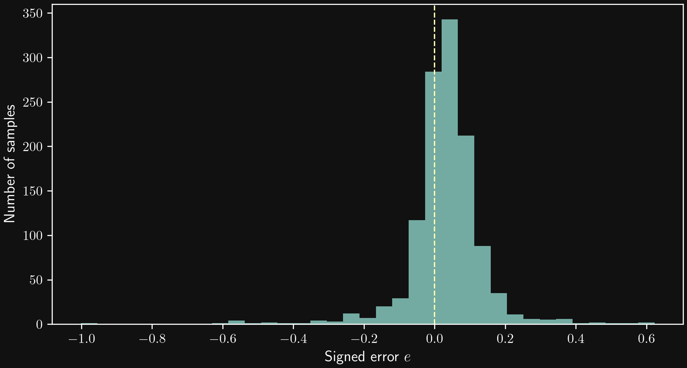

Machine Learning
in Fluid Mechanics
Lecture 2 — Introduction to machine learning
Andre Weiner
Chair of Fluid Mechanics
What is machine learning?
Common steps in machine learning
Common model categories
Parametric and non-parametric models
Deterministic and probabilistic models
Design of experiments
Uniform segmentation: a regular grid

Regular sampling can conceal oscillations

Independent uniform random sampling

Latin hypercube sampling

Sobol sequences

Adaptive sampling
Data normalization
Common normalization methods
Normalization: a fourth-order polynomial
Normalization: comparable features in clustering
Feature design and selection
Embedding mathematical constraints

Embedding known physical relationships
Selecting useful feature combinations
Deep learning
Models, datasets, and predictions
Training as an optimization problem
The multilayer perceptron

Gradient descent
Training variability and repeatable comparisons
Prediction errors and model uncertainties
Box plots: variation between training runs

Direct comparison of predictions and test data

Histograms: the distribution of prediction errors

Heat maps: errors in feature space

Review — Lecture 2
How do experience, task, and performance measure translate into a practical machine-learning problem?
Experience is the data, the task is what the model should predict or do, and the performance measure quantifies success. Training typically optimizes a loss, which need not be identical to the final application-level performance measure.
What are the roles of training, validation, and test data?
Training data fit model parameters. Validation data guide hyperparameters, model selection, and stopping. Test data provide the final independent evaluation. Normalization statistics are fitted on training data only.
What distinguishes parametric from non-parametric models? Is a fixed-architecture neural network parametric?
Parametric models have a fixed, finite number of parameters for a chosen structure, independent of sample count. Non-parametric representations can grow with the dataset. A fixed-architecture neural network is parametric, even if it contains many weights.
Does random initialization make a neural network a probabilistic predictive model?
No. With fixed parameters, a point-regression network can return a deterministic prediction. A probabilistic predictive model represents outcomes through probabilities or a predictive distribution. Randomness during fitting is a separate property.
Why can a regular grid miss an oscillatory response despite covering the entire input range?
The sample spacing can align with the response period, concealing oscillations or suggesting a slow trend: aliasing. Randomization reduces systematic alignment, but a small randomized dataset can still miss important behavior.
How is randomized Latin hypercube sampling constructed, and are its samples independent?
Each coordinate range is divided into N equal segments, one value is sampled per segment, and values are paired using random permutations. Every coordinate segment is used once. The samples are dependent because using a segment excludes it for other samples; full multidimensional coverage is not guaranteed.
How do Sobol sequences differ from ordinary LHS, and what does scrambling do?
Sobol sequences construct coordinated coordinates using binary operations and direction numbers. They can be extended, retaining balance at complete power-of-two totals. Scrambling randomizes coordinates while preserving structured coverage; it changes point locations, not just their order.
How does uncertainty-driven adaptive sampling work, and how does its objective differ from Bayesian optimization?
An initial design provides data for a surrogate and its uncertainty estimate. New observations are selected to reduce uncertainty, then the surrogate is updated. Bayesian optimization instead seeks a good objective value, balancing exploration and exploitation.
Give three reasons for normalizing features or targets.
Suitable scaling can improve conditioning and numerical behavior, simplify learning-rate selection, balance feature contributions in distance-based methods, and make losses easier to compare under a common scaling and evaluation protocol.
How do min–max scaling, standardization, and physical scaling differ?
Min–max scaling maps a training range to an interval such as zero to one. Standardization subtracts the training mean and divides by its standard deviation. Physical scaling uses characteristic quantities to form dimensionless variables. Both min–max scaling and standardization can be affected by outliers.
Why can the fourth-order term disappear when fitting a polynomial on inputs between minus 0.01 and 0.01 in single precision?
The maximum magnitude of x to the fourth power is 10 to the minus 8. With order-one coefficients, adding this contribution to an order-one constant can round it away. Small gradients and poor conditioning are additional issues. Normalizing before constructing powers reduces the feature-scale disparity.
Why does normalization change the closest pair in the airfoil clustering example?
Before scaling, Reynolds-number differences dominate Euclidean distance, making measurements 1 and 2 closest. Scaling both observed feature ranges to zero to one gives lift comparable influence: the distances become 0.85 for 1–2, 0.65 for 2–3, and the square root of two for 1–3. The closest pair becomes 2 and 3.
Name three physically or mathematically motivated feature transformations and their purposes.
A sigmoid produces a bounded feature; a logarithm represents multiplicative scales more evenly; sine and cosine encode periodic angles. Dimensionless groups, ratios, or corrections to a known physical baseline can also simplify the learning problem. A bounded input alone does not bound the model output.
Why is instantaneous DNS velocity not directly interchangeable with RANS velocity when constructing training features?
DNS resolves instantaneous spatial and temporal variation, while RANS uses Reynolds-averaged quantities. Features for a RANS application must be extracted consistently, for example by averaging DNS data before constructing mean-flow features. Features must also be available during deployment.
What does permutation importance measure, and why is it not a definitive ranking of physical importance?
It measures how validation performance changes when one feature is shuffled for a fitted model. Correlated features can substitute for one another, and shuffling can create unrealistic inputs. It describes model reliance, not causality. Attention weights likewise do not automatically provide physical importance or explicit feature selection.
How do a dataset, a model, an observed target, and a prediction differ?
A supervised dataset contains feature–target pairs. The model is a parameterized mapping from feature space to target space. For sample i, the prediction y-hat i is the model evaluated at x i; the observed target y i is the reference value. Both inputs and targets can be vectors.
What operations define an MLP, and why are nonlinear activation functions needed?
Each hidden layer applies a weight matrix and bias followed by a nonlinear activation. An affine output layer is common for unconstrained regression. Without nonlinear activations, successive affine layers collapse to one affine mapping.
How does gradient descent update the parameters, and what is backpropagation?
The update subtracts the learning rate times the training-loss gradient from the current parameter vector. Too large a learning rate can increase the loss. Backpropagation efficiently calculates gradients through the chain rule; it is distinct from the update rule. Mini-batches approximate the full-data gradient.
What is a seed, and why are repeated runs needed when comparing neural-network architectures?
A seed initializes a pseudo-random number generator, helping reproduce initialization, shuffling, and splits. Different seeds can lead to different training outcomes. Fair comparisons use multiple runs, comparable budgets and tuning, and report typical performance with its spread. A seed alone does not guarantee identical results across hardware or software.
What do box plots, error histograms, and feature-space error heat maps reveal?
Box plots summarize repeated-run outcomes using the median, quartiles, whiskers, and potential outliers. Signed-error histograms reveal spread, tails, and possible overprediction or underprediction. Heat maps locate errors within feature-space bins; maxima depend on sample counts and extremes. These observed quantities are distinct from probabilistic predictive uncertainty.